🥊 파이터 계열 7종 — 스펙 검토
스펙:
docs/specs/boxer-class.md (확정 2026-10-14 — 그림은 7:3 v2 3차 키 맞춤판) · 이 페이지는 게임 코드를 바꾸지 않습니다. 게이지 그래프는 스펙의 시작안 수치로 이 자리에서 계산합니다.0. 구현 진행 (impl-boxer, 포트 8861)
단계: ① 1차 파이터 → ② 2차 3종 → ③ 3차 3종. 스펙 docs/specs/boxer-class.md "확인 방법"에 순서가 있다.
- 스킬 시험장: 원투 스트레이트 ★ · 파이터 평타
- 실제 게임(오프라인): index.html?server=http://127.0.0.1:9 → 8초 뒤 콘솔에서
dev/boxer/preset.js를 불러boxerPreset('fighter')·boxerWatch()
2차 3종 (② — 시험장 캡처)
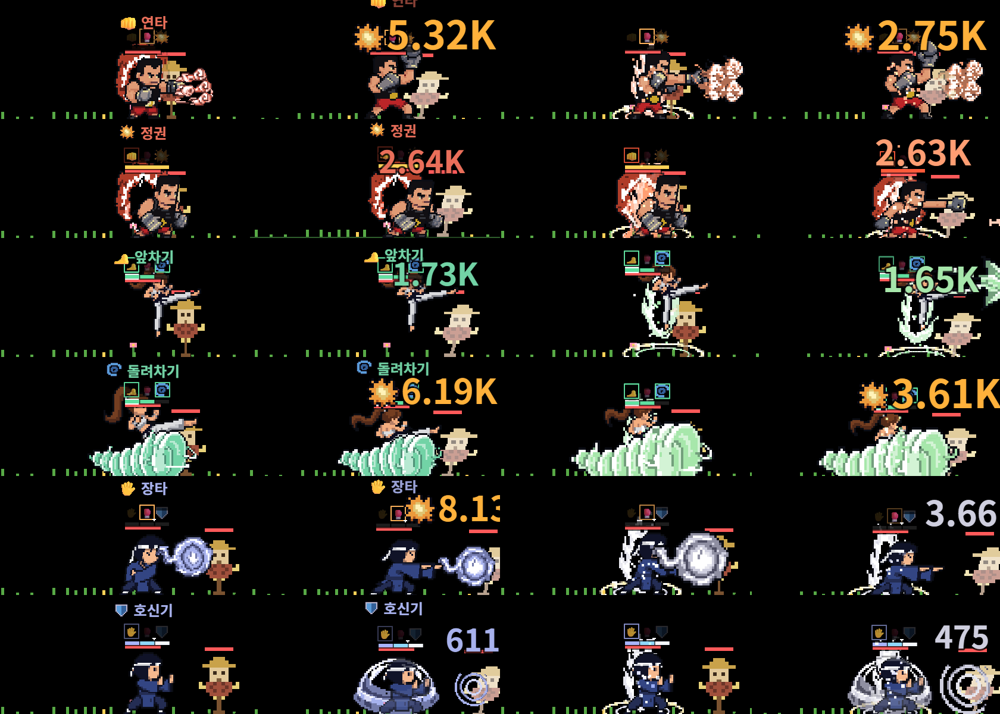
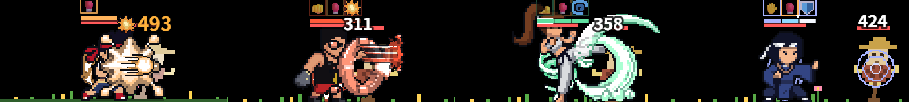
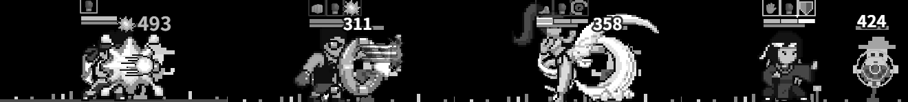
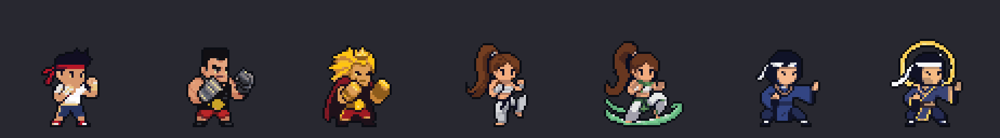
시트 미리보기: 스트라이커 · 킥복서 · 기공사 · 시험장 연타 러시 ★★ · 회전 발차기 ★ · 장풍 3단


파이터 시트 (PixelLab, 11동작)
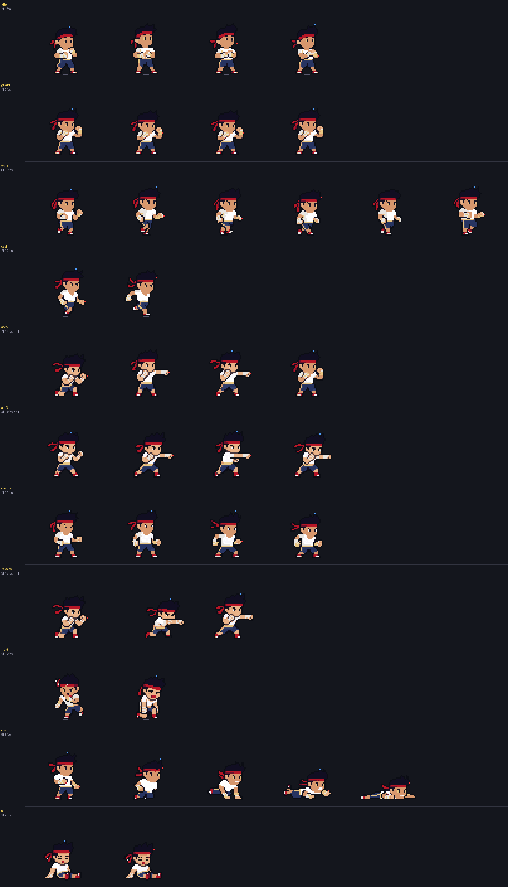
게임 캡처
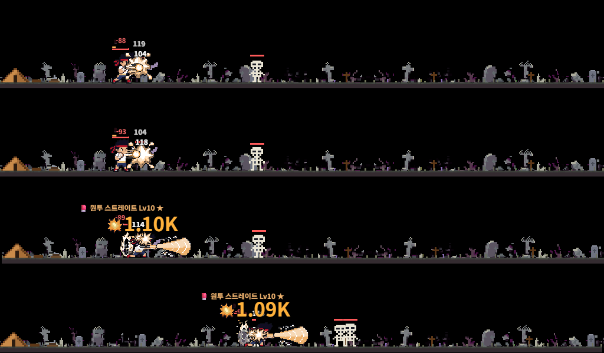
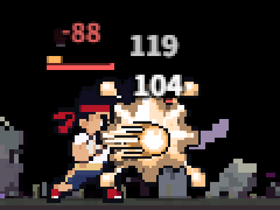
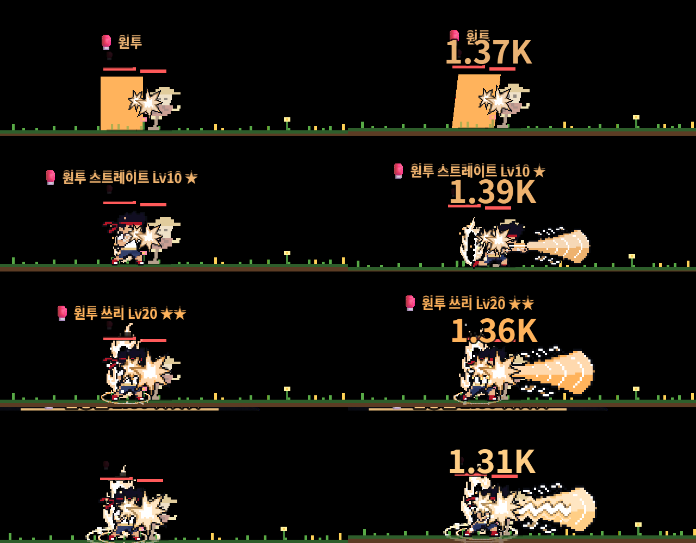
1. 요지
파이터 계열 스킬에는 쿨타임이 없다. 기(氣)를 모아서 쓴다. 2차마다 기를 채우는 방식이 다르다.
- 기 게이지 → 주 기술(직업의 대표 기술)이 쓴다. 게이지 모양·채우는 법이 직업마다 다르다.
- 투지 → 기를 쓴 만큼 쌓인다. 물려받은 원투·Lv70 기술·궁극기가 각자 문턱마다 나간다. 스킬을 새로 배워도 다른 스킬이 덜 나가지 않게 하려고 둔 칸이다.
- 결투·레이드·원정 시작 때 게이지와 투지가 가득 → 첫 몇 초에 스킬이 한 번씩 나가는 구조가 쿨타임 직업과 같다.
- 쿨타임 효과 변환: ⏱️ 노드 → ☯️ 기 절약(소모 ×0.6 = 충전 ×1.67) · 고유 발동
cdreset→ 게이지 최대치 50% 즉시 충전. - 사용자 결정: 이름(파이터 / 스트라이커 / 킥복서 / 기공사 → 챔피언 / 템페스트 / 그랜드마스터) · 새 기사만 · 장풍 2단 고정.
- 출시: 1·2차 4종 먼저, 3차 3종은 다음 패치. 렌더링은 통짜 스프라이트 시트, 이펙트는 PixelLab 텍스처 48장.
2. 직업 7종
3. 게이지 시뮬레이션
같은 차수 쿨타임 직업과 비교 (허수아비 600초, Lv1 위력, 고른 마리 수)
쿨타임 직업 값은
src/classes.js 실측입니다. 평균 시전 간격 1차 17.8초 · 2차 8.2초 · 3차 6.9초, 스킬 DPS(공격력 배수/초) 1차 0.39 · 2차 Lv70 전 0.49 · 2차 0.72 · 3차 1.06. 기준 범위는 시전 간격 ±15%, 스킬 DPS ±10% 입니다.4. 쿨타임 효과 변환
| 효과 | 쿨타임 직업 | 파이터 계열 |
|---|---|---|
| ⏱️ 트리 노드 (10칸 −40%) | 그 스킬 쿨타임 ×0.6 | ☯️ 기 절약: 그 스킬 소모량(주 기술) 또는 문턱(투지 기술) ×0.6 = 그 스킬 몫 충전 ×1.67 |
| 🔁 고유 특수 refund | 처치 시 쿨타임 x% 환급 | 처치 시 그 기술 소모량(문턱)의 x% 를 기(투지)로 돌려받음 |
| ✨ 고유 특수 chain | 다른 스킬 쿨타임 x% 감소 | 다른 투지 기술 칸을 각 문턱의 x% 만큼, 기 게이지를 주 기술 소모량의 x% 만큼 채움 |
| 고유 발동 cdreset (우로보로스 12%) | 그 스킬 쿨타임 0 | 기 게이지 최대치의 50% 즉시 충전 |
| 장비 옵션 | 지금 쿨타임 옵션 없음 (GEAR_OPTS 확인) | |
| 앞으로의 캐릭터 전체 쿨타임 효과 (시즌7 룬) | 모든 스킬 쿨타임 −x% | 기 충전 ×1/(1−x) |
5. 기준 그림 — 손도트 → ComfyUI 시안 → PixelLab 최종
사용자 피드백("권투가 왜 이렇게 저퀄이야")으로 기준 그림을 다시 뽑았습니다.
ComfyUI(Z-Image + 픽셀 LoRA)로 직업마다 시안 12장(모두 84장) → 하나를 골라 바탕을 지우고 키 40도트로 줄여 256×256 판에 놓음 → PixelLab
image-to-pixelart(256 → 64, 직업당 1회) → 바탕·발밑 그림자 정리, 발 바닥 y=58, 게임과 같은 바깥 외곽선 #0b0d14 (dev/boxer/to_pixel.py).
기존 직업은 게임의 drawHero 로 그려 1칸=1px 로 복원했습니다. 모두 같은 축척(4배 확대)입니다.7:3 v2 (3차 키 맞춤) — 최신: 3차 3종도 1·2차와 같은 42칸 방식으로 다시 뽑아 계열 7종이 모두 기존 기사와 같은 키입니다.
3차는 스타일 참고 4장 중 1장을 부모 2차 그림으로 바꿔 특징을 이었습니다 — 챔피언 = 스트라이커 + 사자 갈기·망토·황금 건틀릿, 템페스트 = 킥복서 + 바람 목도리·발밑 회오리, 그랜드마스터 = 기공사 + 후광·금빛 장식.
보강: 스트라이커 장갑을 금속판 장갑(
striker_g 28번)으로, 킥복서를 무릎 든 자세(47번, 추가 생성 없이 이미 뽑은 64장에서)로 바꿨습니다.3차·보강 변형 64장 (고른 것: 챔피언 16 · 템페스트 45 · 그랜드마스터 16 · 스트라이커 금속판 28 · 킥복서 47)
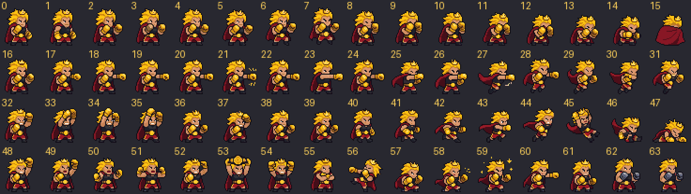
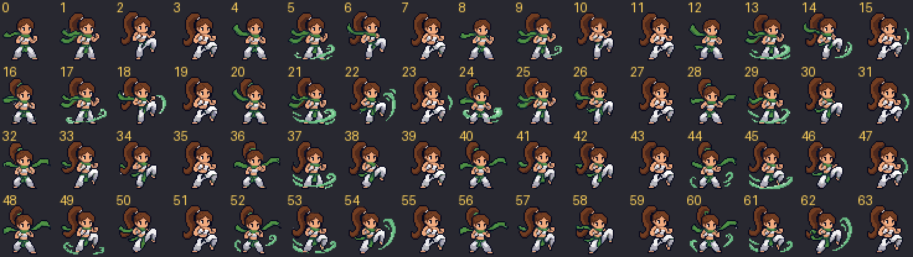
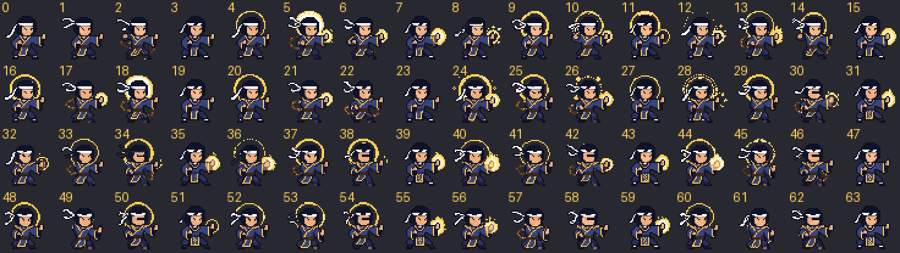
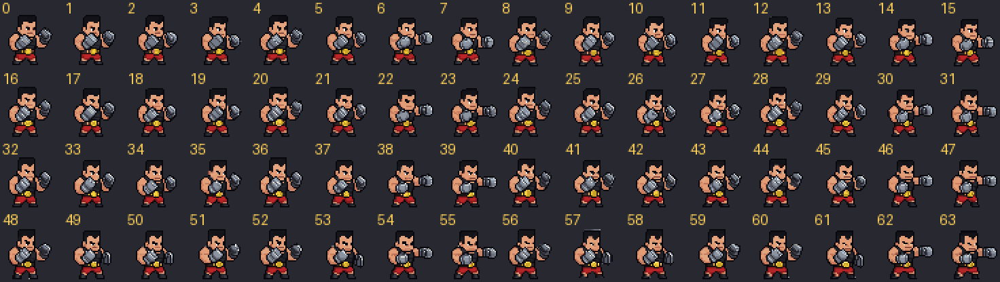
7:3 v2 첫 판
7:3 v2 첫 판 — 축소 대신 PixelLab
generate-with-style-v2로 직접 뽑았습니다. 기존 기사 스프라이트 4장(성기사·레인저·대검전사·마법사, 42×42 에 꽉 맞게 자름)을 스타일 참고로 넣어 같은 꼬마 비율·도트 크기·외곽선으로, 한 번에 변형 64장(직업당)을 받아 하나씩 골랐습니다.
손 마무리(dev/boxer/finish.py): 재질별 4단 램프 정리 · 바깥 외곽선 #0b0d14 통일 · 발 맞춤. 1·2차 4종은 기존 기사와 키가 같은 42칸판, 3차 3종은 64칸판이라 아직 약 1.3배 큽니다(사용량 상한으로 다음에 맞춤). PixelLab 이번 작업 153회 (상한 150 — 3회 초과).7:3 v2 변형 64장 (1·2차, 고른 것: 파이터 0 · 스트라이커 0 · 킥복서 16 · 기공사 0, 왼쪽 위부터 0)
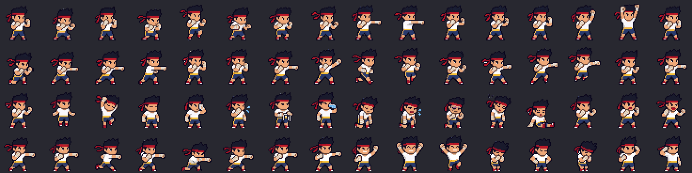
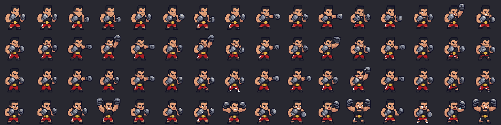
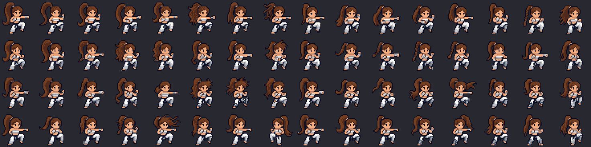
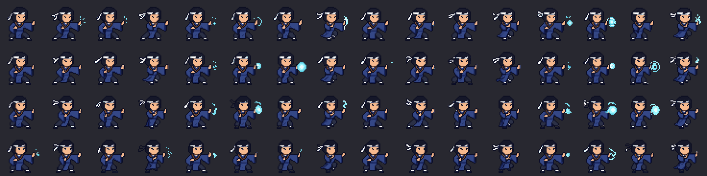
이전 판 (7:3 v1 · 고퀄)
사용자 의견 반영: "퀄리티가 너무 높아졌다, 픽셀 느낌" · "기존 7 : 현재 3" · "스트라이커는 원본 자체가 별로" · "픽셀 뭉개지는 현상만 잡아서".
7:3 판 (
dev/boxer/stylize.py, PixelLab 추가 사용 없음): 고퀄 판을 64 해상도 그대로 두고 ① 재질별 3단 정리(색상 계열마다 밝기 3단의 평평한 면 — 기존 기사와 같은 칠) ② 외톨이 점 제거 ③ 게임과 같은 바깥 외곽선.
처음 시도한 절반 축소 + EPX 는 얼굴·선이 뭉개져서 버렸습니다. 스트라이커는 프롬프트를 고쳐(매서운 성인 복서) 시안 12장을 새로 뽑고 111번으로 바꿨습니다.고퀄 판 (PixelLab 64, 참고)
ComfyUI 시안 (직업마다 12장, ✔ = 고른 것)
고른 기준: 옆모습(오른쪽)인가, 실루엣 특징이 분명한가, 구도가 깨지지 않았나. 원본 1024px 는 저장소 밖(
C:\AI\comfy-raw\boxer), 여기는 256px 축소본입니다. 번호 = seed (왼쪽 위부터 1, 스트라이커 다시 뽑기는 101부터).3차까지 7종을 모두 뽑았습니다. 크기는 아직 들쭉날쭉합니다(스트라이커·챔피언이 크고 킥복서가 작다). 시트 생산 때 키 목표를 직업별로 36~40도트로 맞춥니다.
6. PixelLab 시험 기록 (1차 시험 6회 + 기준 그림 약 12회)
| 시도 | 방식 | 결과 | 판정 |
|---|---|---|---|
| 기준 그림 A | bitforge, 스타일 참조 = 기사 두 명 | 두 명이 나오고 등신대에 가깝다 | ✗ |
| 기준 그림 B·C | bitforge, 시작 그림 = 레인저 (강도 250·450) | 근육형 등신대 / 레인저 모자가 남음 | ✗ |
| 손도트 기준 그림 | 레인저 도트를 틀로 손으로 | 비율·외곽선은 맞지만 단순·평면적 (사용자: 저퀄) | ✗ 교체 |
| ComfyUI 시안 → image-to-pixelart | Z-Image 84장 중 고름 → 256 → 64 도트화 (7회) | 3~5단 명암·근육·주름·글러브 디테일, 기존 상위 직업과 같은 급 | ✓ 채택 |
| 대기 | animate-with-text-v3 4프레임 | 그림체·색 유지. 몸이 조금 정면으로 돈다 | △ |
| 잽 | 같은 방식 | 팔이 끝까지 안 뻗는다 | ✗ |
| 잽 + 끝 자세 | last_frame = 손으로 그린 팔 뻗은 자세 | 중간이 정면으로 돌고 흰 얼룩 | ✗ |
결론 (갱신): 기준 그림은 ComfyUI 시안 → PixelLab image-to-pixelart. 아래는 손도트 시절의 동작 시험 기록입니다. 그림체는 손도트로 잡고, PixelLab 은 반복 동작(대기·걷기·앉기·피격·쓰러짐 등)과 이펙트 텍스처에 쓴다. 공격·기술 동작은 손 키 자세 2~3장 + 코드 보간 + 궤적 텍스처. 뼈대 지정 애니메이션(
animate-with-skeleton-v3)은 Tier 1 결제 뒤 시험.7. 이펙트 텍스처와 PixelLab 사용량
| 묶음 | 장수 | 내용 (2차끼리 다른 시트, 3차는 a 변형) |
|---|---|---|
| XW 평타 궤적 | 7 | 주먹 직선 / 건틀릿 강타·사자 건틀릿 / 발차기 호·바람 띠 / 장타 파동·연꽃 파동 |
| XH 평타 명중 | 7 | 직업마다 하나 |
| XP 투사체 | 2 | 기탄 / 금빛 기탄 |
| XE 스킬 고유 | 16 | 충격파·주먹 잔상·강철 주먹·쐐기·회오리·기탄·기막·계열별 기 오라 3종 |
| XK 스킬 명중 | 10 | 스킬마다 하나 (궁극기 막타 포함) |
| XF 궁극기 | 6 | 배경 240×100 ×3 + 거대 부품 ×3 |
| 공용 (skill-vfx) | — | C3 충격파 고리 · C6 흙먼지 · C7 파편 · C8 균열을 다시 칠해 씀 (새로 안 뽑음) |
| PixelLab 사용량 | 회 |
|---|---|
| 캐릭터 반복 동작 7종 × 8동작 × 약 2회 | 약 112 |
| 캐릭터 큰 동작 보조 (뼈대 시험·다듬기) | 약 28 |
| 이펙트 텍스처 48장 | 약 185 |
| 재작업 여유 15% | 약 50 |
| 파이터 합계 (+ skill-vfx 약 740 = 약 1,115 → Tier 1 한 달 안) | 약 375 |
8. 수용 기준 (이번 세션에서 확인한 것)
9. 사용자가 정할 것
- 스펙 요지(주 기술 + 투지 구조, 충전 시작안, 스킬 10종, 시트·이펙트 규격)를 이대로 확정할지.
- 그림체 선택 (5절 세 판 비교): ② 7:3 판으로 갈지, 비율을 더 옮길지(예: 8:2 / 6:4). 고칠 직업이 있으면 ComfyUI 시안에서 다른 번호를 고르거나 더 뽑습니다.
- PixelLab Tier 1 잔량 1,780회 (VFX 몫 약 740회 남김).